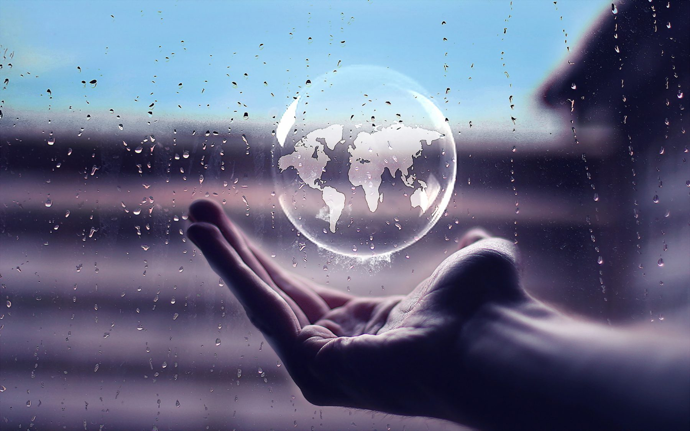
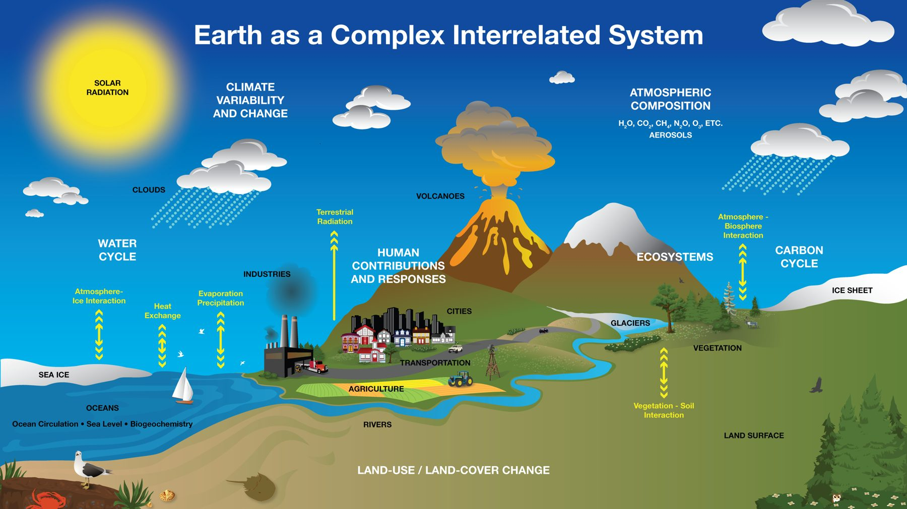
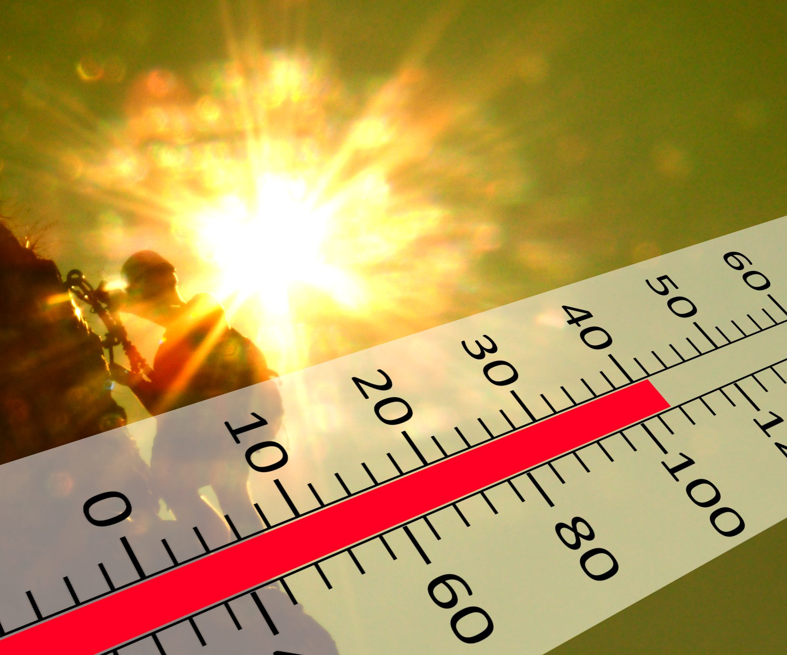
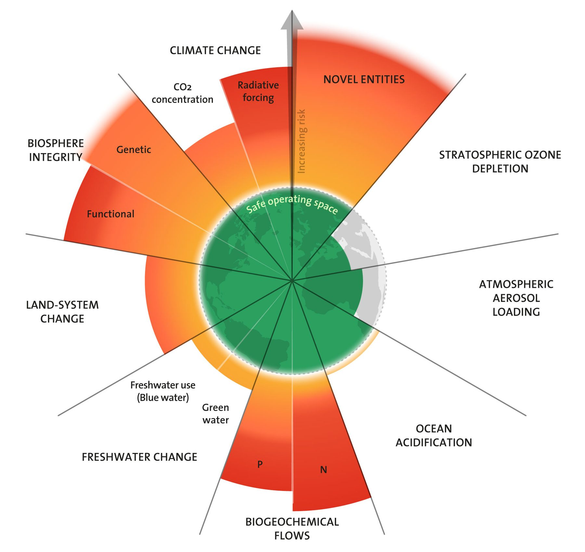
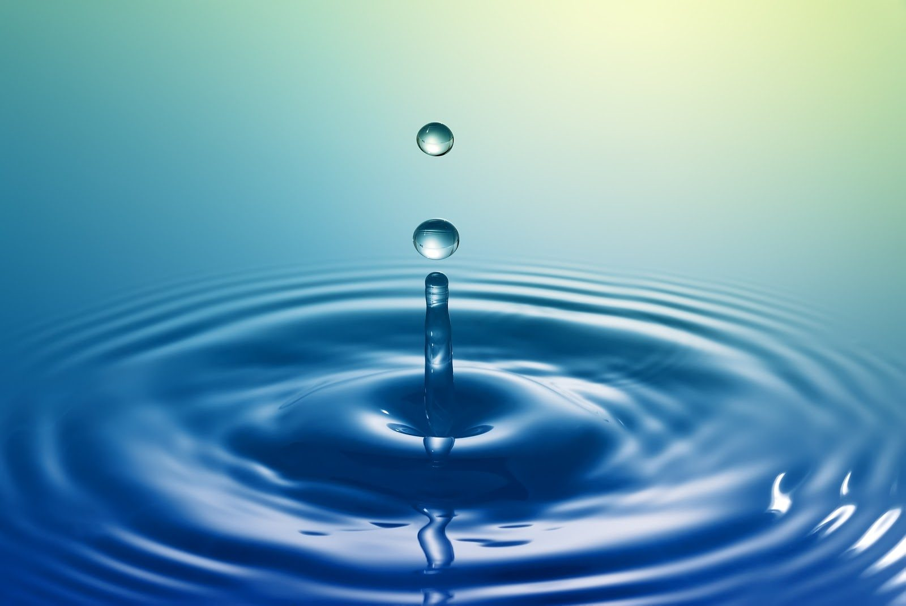
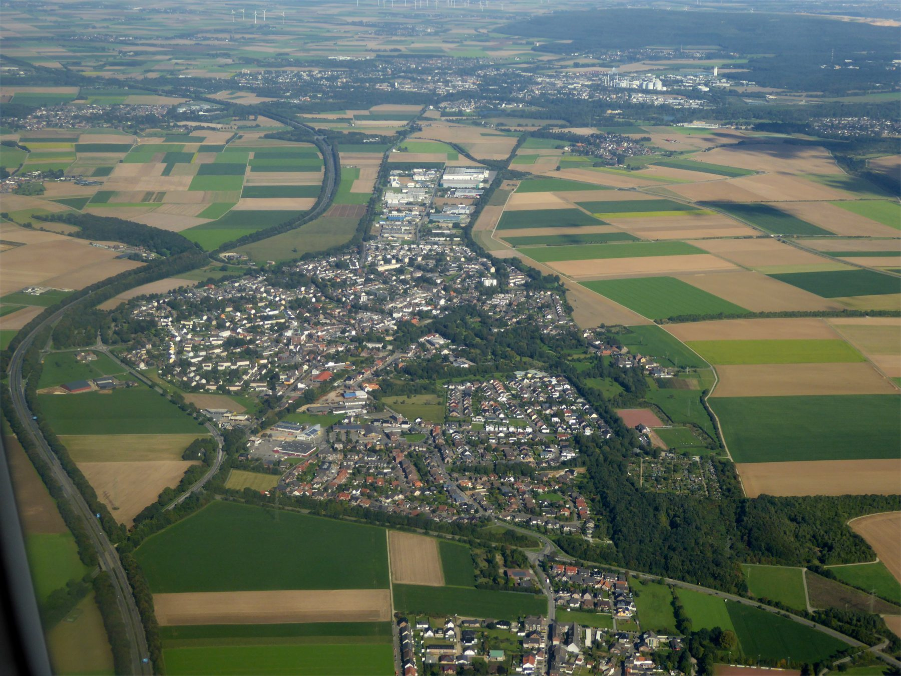
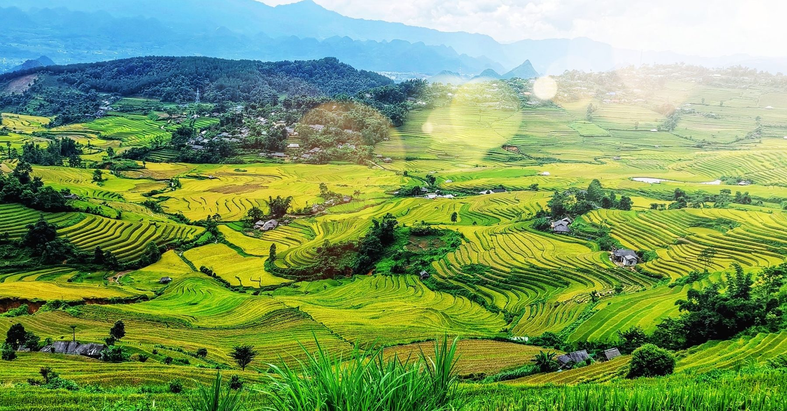
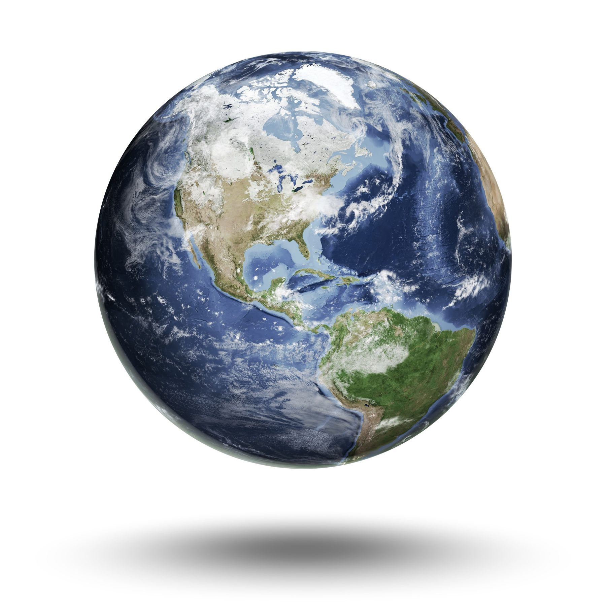

Deliver your sustainability story
This is the third and last step of your final project capstone. Turn your topic and thesis into a compelling video. Tap each red icon to read the details.

Narrated video, 5 to 7 minutes
Submit one video of 5 to 7 minutes. Seven minutes is the maximum. Your face must be visible for at least the first 2 minutes.
Your professor can approve another format if you ask first.
Submit your original presentation file
Upload the file you used to make the video: PowerPoint, Google Slides, Canva or similar.
One reference page
List every source and every visual you used. You can submit it separately or put it at the end of your video.
Comment on your teammates’ projects
Watch your teammates’ presentations. Give substantive and constructive comments on at least two of your peers’ projects.
Four required parts
Your video must cover all four. Tap a part to see what it looks like.

Background and thesis
Give your video a specific title. Explain the problem and state your thesis, the one sentence that is your central argument.
Back it up with facts and figures from your sources.
Systems thinking
Show a diagram of the social, ecological and technological parts of your issue and how they connect.
Point out at least one feedback loop, then explain it in a short summary.
Ecosystem services and biogeochemical cycles
Tell us which ecosystem services or cycles (carbon, nitrogen, phosphorus, water) your issue affects, and how that reaches people.
Sustainability solution strategies
Propose a set of strategies, not just one. For each, say who does it and which part of the system it changes.
Your 5 to 7 minutes
Your face must be visible for at least the first 2 minutes. Tap a block for what belongs there.

Introduce yourself and your topic
Be on camera. Say your title, why the issue matters, and your thesis.
Show the system
Share your slides while you talk: facts with citations, your systems diagram, the ecosystem and cycle connections, then your solutions.
Wrap up and give credit
Restate your thesis in one sentence and say what should happen next. Show your reference page if you put it in the video.
Draw your systems diagram
An example only: show how parts of your own issue connect.
R = reinforcing loop. B = balancing loop. Tap to learn more.

A loop that speeds itself up
Hotter days lead to more air conditioning. That adds waste heat and power use, which makes it hotter still. Each pass around the loop pushes things further the same way.
A loop that pushes back
A growing tree canopy gives shade and cools the air, which lowers heat. The change is pulled back toward a steady state.
Make the diagram work for you
Use circles or boxes for the parts and arrows for how one affects the next. Mark each loop R or B. Show impacts across systems (nature, people, technology), and use data visuals where you can.
How it is graded
The video is worth 10% of your course grade. Tap a row to see what top marks look like.

Introduction and thesis
Is the title specific? Is the problem clear and the thesis justified with facts and figures?
Systems thinking approach
Does your diagram and summary show connected parts and feedback loops?
Ecosystem characteristics
Do you explain the links to ecosystem services and biogeochemical cycles?
Sustainability strategies and solutions
Are your strategies specific, connected to the system, and well argued?
Research citations and synthesis
Do you use at least three peer-reviewed sources and connect their ideas?
Presentation creativity and quality
Is the video clear, organized, creative and well narrated, with meaningful visuals?
Sources and the reference page
Cite everything you use, in the video and on the page.
- At least three peer-reviewed sources (journal articles)
- Cite visuals: every photo, chart and diagram you did not draw
- Show citations on slides next to the facts they support
- Reference page submitted separately or at the end of the video

How a slide shows a citation
On the slide, put a short note beside the fact: (Jennings et al 2024).
On the reference page, give the full APA entry:
Jennings, V., Rigolon, A., Thompson, J., Murray, A., Henderson, A., & Gragg, R. S. (2024). The dynamic relationship between social cohesion and urban green space in diverse communities: Opportunities and challenges to public health. International Journal of Environmental Research and Public Health.
Use your own sources from Step 2.
Make it your own
This is a separate assignment from your topic and outline.
- Original work. No copy and paste
- Not AI generated. The ideas, words and voice are yours
- Use visuals meaningfully: feedback loops, impacts across systems, data shown visually
- Submit the original file you used (PowerPoint, Google Slides, Canva)

Comment on two peers
Watch your teammates’ videos. Give substantive, constructive comments on at least two.
“Great video, I liked it.”
This is kind, but it tells your teammate nothing about what worked or what to change.
A comment that helps
“Your feedback loop showing heat and air conditioning made the problem clear. I could not tell which solution matters most. Could you say which one you would start with, and which source supports it?”
It names a strength, asks one specific question, and points to evidence.
Before you upload
Tap each item as you finish it. It is saved only on this device.
